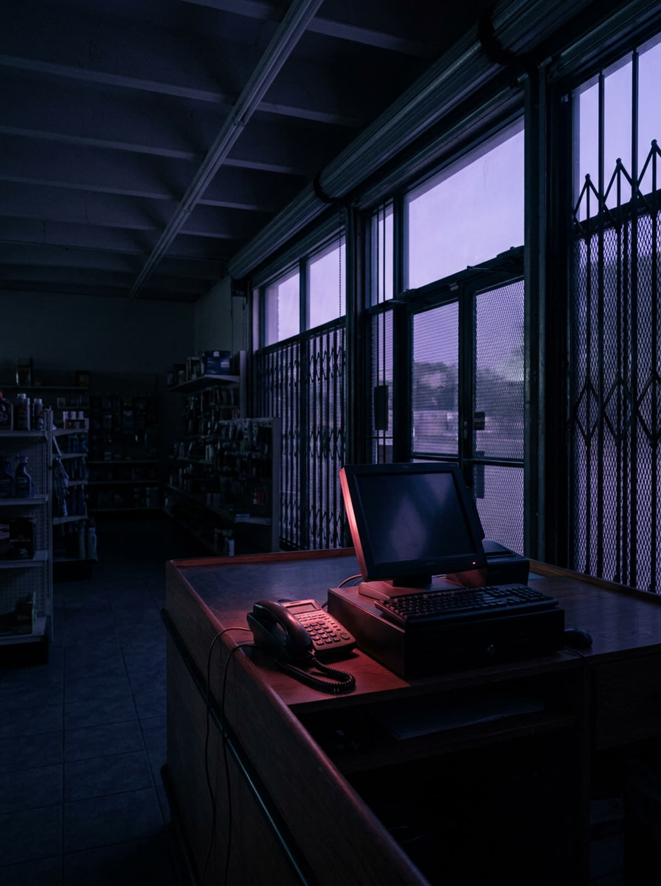
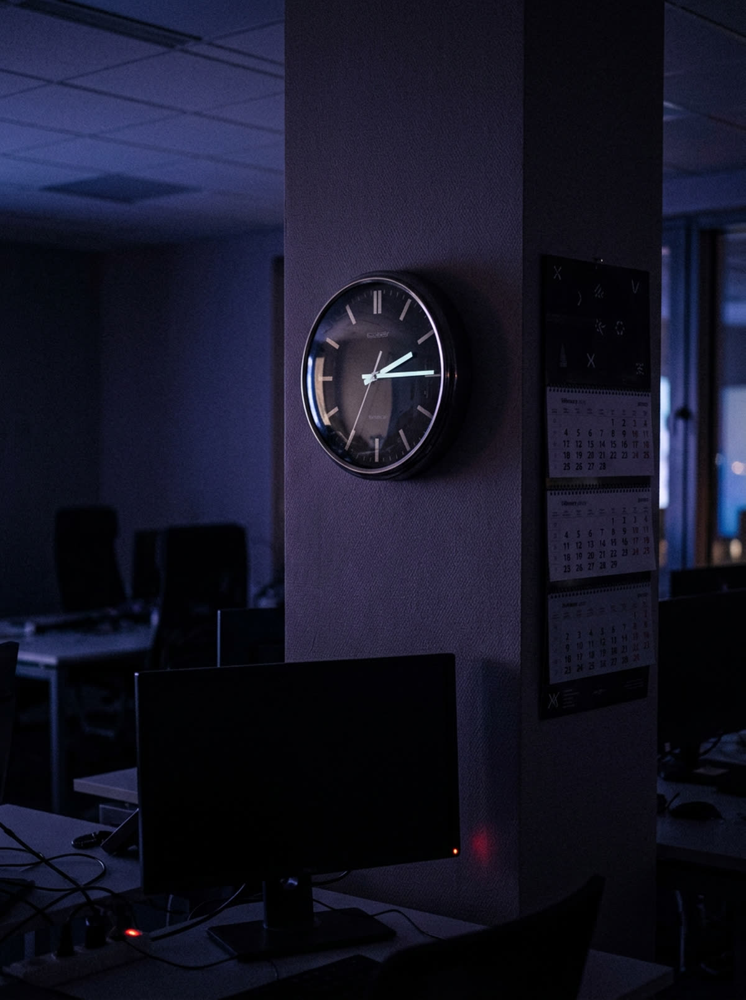
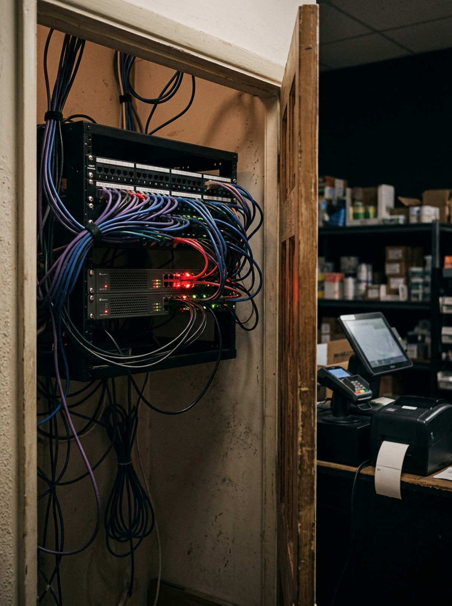

O expediente acaba.
O Konso assume o parque. Cada equipamento passa a ter alguém olhando.
Konso · vigia de equipamentos e chamados
Das 18h às 8h e em todo fim de semana, o parque inteiro fica sem ninguém olhando. A falha não espera o expediente. Descobrir quando o cliente liga é descobrir tarde.
O Konso assume o parque. Cada equipamento passa a ter alguém olhando.
Dois voltam sozinhos em menos de 5 min. Nenhum chamado: a tolerância fez o trabalho.
Onze eventos repetidos chegam. O dedup guarda um e descarta o resto.
E não volta. A contagem de 5 minutos começa.
O CH-2481 nasce com a hora exata da falha. O prazo de 2 dias úteis já está contando.
O Konso lê o parque inteiro e registra tudo. Nada a fazer até o dia clarear.
Falta a segunda prova: a confirmação do responsável no local.
O dia começa com o chamado aberto, o histórico anexado e o técnico designado.

O tempo entre a falha e alguém perceber (MTTD) é, na prática, o tempo até o cliente ligar ou a loja abrir. Até lá o equipamento segue parado e ninguém registrou a hora.

O SLA com o seu fornecedor ou cliente começa na falha, não no telefonema. Quando o chamado abre tarde, o prazo já nasce consumido e o atraso vira discussão contratual.

Switch que cai derruba PDVs, coletores e impressoras no mesmo ponto. Sem correlação, cada sintoma vira um chamado diferente e a causa raiz continua escondida.
Sem histórico de quando o sinal caiu e voltou, o técnico chega sem contexto, não reproduz o problema e a visita é paga sem resolver. A reabertura custa a segunda viagem.
Os números do vigia
5 min de tolerância e até 2 min de varredura.
Evento fora dela é recusado. Nada de repetir mensagem antiga.
Conta desde a abertura, pulando fim de semana e feriado nacional.
Madrugada, domingo e feriado entram na mesma conta.
A operação só volta às 08:00 de segunda e o chamado abre depois disso.
Janela de tolerância de 5 min, varredura a cada 2 min. O prazo de 2 dias úteis já está contando e o técnico da região, designado na abertura do dia útil.
Ping e heartbeat do que você já monitora, ou um webhook do próprio equipamento. Cada evento vem assinado com HMAC-SHA256 e carimbo de tempo; fora da janela de 300 s, é recusado.
POST /api/konso/eventos
X-Konso-Source: loja-214
X-Konso-Timestamp: 1791840134
X-Konso-Signature: 9f2c…e41a
{"event_id":"7c1e…","type":"down",
"equipment":"pdv-03",
"occurred_at":"02:14:07"}
Queda de segundos não vira chamado: a janela de tolerância é de 5 min por fonte. Evento repetido é descartado pelo event_id e evento fora de ordem não troca o estado.
02:14:07 pdv-03 down → tolerância 02:16:40 pdv-03 down duplicado, descartado 02:17:02 pdv-03 down evento antigo, ignorado 02:19:11 pdv-03 sem retorno em 5 min → pronto
Passada a tolerância, o Horus abre o chamado com cliente, equipamento e hora da falha. O prazo de 2 dias úteis começa na abertura, e um equipamento nunca ganha dois chamados abertos.
02:21 varredura: pdv-03 offline há +5 min
02:21 chamado CH-2481 criado · status aberto
cliente: Loja 214 · 1 equipamento
prazo: 2 dias úteis
A NovaSync designa um técnico da região. Com o selo NovaSync, programa em implantação, o técnico que cumpre os requisitos entra primeiro na lista. A visita fica agendada e você vê quem vai e quando.
CH-2481 aberto → técnico designado região: Zona Oeste, São Paulo janela: hoje, 08:00 às 12:00 selo: NovaSync (se houver na região)
O chamado só é finalizado com duas confirmações: o sinal do equipamento volta ao normal e o responsável no local valida. O RAT sai em PDF com os dados do chamado.
06:48 sinal: pdv-03 online
07:20 responsável confirmou no local
CH-2481 atendimento concluído
RAT-2481.pdf anexado
CH-2481 finalizado
Não. Ele lê o sinal que o equipamento ou o seu monitoramento já emite: ping, heartbeat ou webhook assinado. Sensor próprio entra só sob consulta.
Cada fonte tem uma janela de tolerância, de 5 minutos por padrão. Se o equipamento volta dentro dela, nenhum chamado é aberto.
Você define a regra por equipamento. O chamado nasce no Horus, com prazo em dias úteis, e a NovaSync designa um técnico da região.
Em duas camadas: o sinal do equipamento volta ao normal e um responsável no local confirma. Só então o chamado é finalizado.
Está em implantação. Entramos com um piloto de escopo e valor combinados, em equipamentos que você escolher.
Escolha alguns equipamentos e montamos um piloto com escopo e valor combinados. Você vê o chamado abrir sozinho.
Montar um piloto do Konso